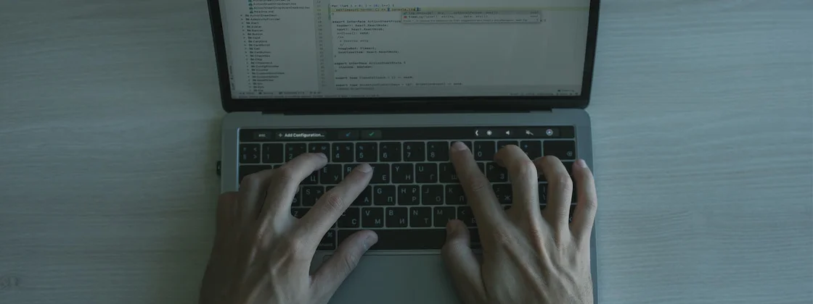

Quais foram as linguagens de programação mais usadas em 2022?
03/02/2023 às 17:30 1 min de leitura
Aléxis Cerqueira Góis
O JavaScript manteve o posto de linguagem de programação mais utilizada no mundo pelo oitavo ano consecutivo, de acordo com o relatório Octoverse 2022 elaborado pela GitHub. O código universal e multiplataforma foi seguido pelo Python, que apresentou um aumento de 22,5% em relação a 2021.
O levantamento, realizado entre os 100 milhões de usuários do GitHub, também apontou quais as identificou as linguagens de programação estão crescendo mais rápido. O maior destaque vai para a linguagem de configuração de código aberto Hashicorp Configuration Language (HCL), que cresceu 56% no ano passado.
O GitHub afirma que 20 milhões de novos usuários chegaram na plataforma no ano passado. O Brasil está entre os países com maior crescimento dentro da comunidade colaborativa de desenvolvedores, registrando cerca de 2 milhões de novas pessoas.